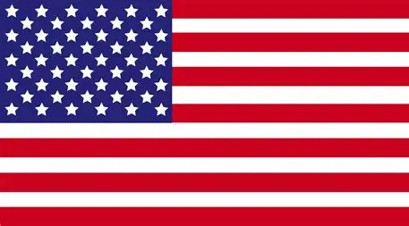

web spider site
Hallo perkenalkan nama saya Haykal Irfan Prasetya, dan itu aja
Kepada mereka yang mengantisipasi pembuatan situs web yang didedikasikan untuk Visual Studio Code, lengkap dengan tutorial, saya harus menyampaikan permohonan maaf yang tulus; aspirasi saya terletak pada hal yang jauh lebih sederhana.
Independence Day, yang dikenal secara umum sebagai Hari Keempat Juli, adalah hari libur federal di Amerika Serikat yang memperingati pengesahan Deklarasi Kemerdekaan pada 4 Juli 1776, yang mendirikan Amerika Serikat. Para delegasi Kongres Kontinental Kedua menyatakan bahwa Tiga Belas Koloni tidak lagi tunduk (dan tertekan) kepada raja Inggris, Raja George III, dan sekarang merupakan negara bagian yang bersatu, bebas, dan merdeka. Kongres memberikan suara untuk menyetujui kemerdekaan dengan meloloskan Resolusi Lee pada 2 Juli dan mengadopsi Deklarasi Kemerdekaan dua hari kemudian, pada 4 Juli. Hari Kemerdekaan biasanya dikaitkan dengan kembang api, parade, barbekyu, karnaval, pameran, piknik, konser, pertandingan bisbol, reuni keluarga, pidato politik, dan upacara, selain berbagai acara publik dan privat lainnya yang merayakan sejarah, pemerintahan, dan tradisi Amerika Serikat. Hari Kemerdekaan adalah hari nasional Amerika Serikat. dan itu aja karena saya tidak punya ide-idea😢tadi si pengen bikin sesuatu lain dari pada ini, nih bendera america untuk lain
